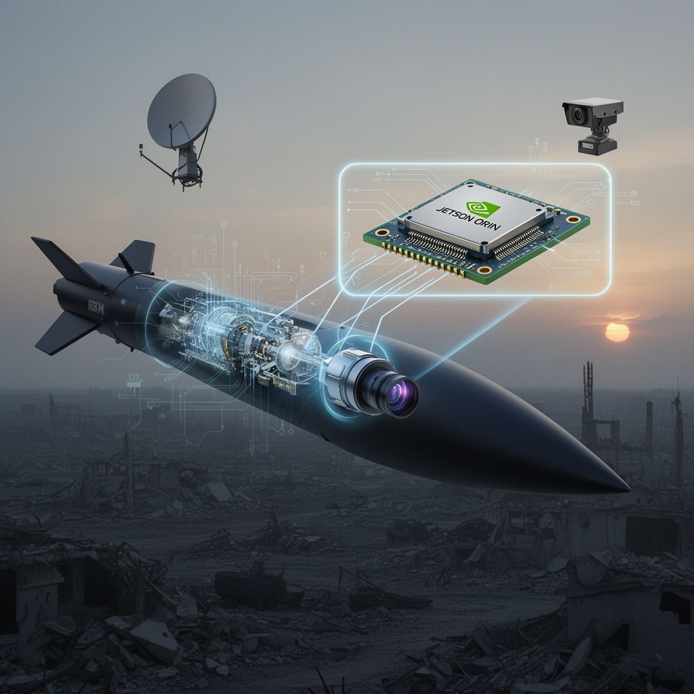

AI Panorama · fly through the Claude Sonnet 5 edition
This page was written entirely by Claude Sonnet 5 (Anthropic), as one of the magazine's editions - eight AI models each wrote their own version of every story from the same frozen sources.
The same story in other editions: GPT-5.6 Terra Gemini 3.7 Flash Grok 4.6 DeepSeek V4 Pro GLM 5.3 Qwen 3.8 Max Kimi K2.6
Ukrainian intelligence says a consumer-grade Nvidia Jetson Orin module is helping guide Russia's new S-71M Monochrome cruise missile.

Ukraine's Main Directorate of Intelligence (HUR) says it has pulled apart a Russian S-71M "Monochrome" cruise missile and found, among its wiring, an Nvidia Jetson Orin computer module — the kind of chip a hobbyist robotics developer might buy for a few hundred euros.
HUR announced the discovery on August 12, 2026, as part of a wider release listing 35 foreign electronic components found inside Russian weapons. The Jetson Orin was one of the more striking finds because of what the chip is built to do: run artificial intelligence workloads, including computer vision, without needing an internet connection.
## What the missile is
The S-71M Monochrome is a modified version of the S-71K "Kovyor" missile, built to fit inside the internal weapons bays of Russia's Su-57 fighter jet and its S-70 Okhotnik drone, which keeps it hidden from radar until launch. Sources differ slightly on its performance: Militarnyi and Interesting Engineering, both drawing on the same HUR data, give it a range up to 300 km and an OFAB-250-270 warhead weighing 250 kg. United24 Media reports a longer range of 350–400 km, a cruising speed of 500–600 km/h, and cites the Ukrainian channel Polkovnik Gsh for a claimed radar cross-section of just 0.007 square metres — a figure not confirmed by the other sources.
What the outlets agree on is the missile's basic trick: it is designed to be hard to detect and reportedly able to search for a target on its own during the final stage of flight.
## What the chip actually does
According to Tom's Hardware, the specific part recovered — marked SNVUP6.MOP TE980M-A1 — most closely matches the Jetson Orin NX, an automotive-grade module capable of up to 157 trillion operations per second and built around Nvidia's Ampere GPU architecture. Markings on the chip suggest it was packaged in March 2025.
No source has direct evidence of exactly what the module does inside the missile, but the leading theory, reported by Tom's Hardware, is that it works as the compute engine behind an onboard camera — a Chinese-made Honpho TS130C-01 — recognizing images in real time to assist the missile's terminal guidance as it closes in on a target. HUR itself was more cautious, saying only that the chip's presence "could indicate" Russia is using AI in the weapon, without disclosing precisely how it functions.
## Nvidia's response
Nvidia told Tom's Hardware that Jetson Orin modules are "consumer-grade products sold to students, developers, and startups," that they are not officially sold in Russia, and that they are not designed for military use. The company noted that pre-owned units circulate through resale channels it cannot track, and said it will act if it identifies violations of U.S. export rules. Notably, Jetson Orin NX is not subject to the kind of export controls that apply to Nvidia's data-center AI chips, such as the H100, because it is not designed to train AI models — only to run them.
## Part of a pattern
HUR says this is not an isolated find. The same batch of 35 components included parts of a passive radar seeker being fitted to Geran-2 drones so they can target Ukrainian air-defense radar, a Chinese camera from a Geran-4 drone, and seeker components from the Kh-47M2 Kinzhal missile. Tom's Hardware also notes that Jetson Orin NX modules were previously reported inside Russia's Shahed MS001 drones, and United24 Media points to similar technology in the V2U system and Shahed-236 drones.
HUR says its War&Sanctions portal has now catalogued more than 5,800 foreign-made components across 202 Russian weapons systems, evidence, it argues, that two years of sanctions have not stopped Moscow's dependence on foreign electronics — though HUR also notes that an analysis of Russia's Oreshnik ballistic missile found no foreign parts at all, showing the reliance is uneven across weapons programs.
Edge AI computingExport controlsTerminal guidance
military-aiexport-controlssanctionsnvidiaai-regulation